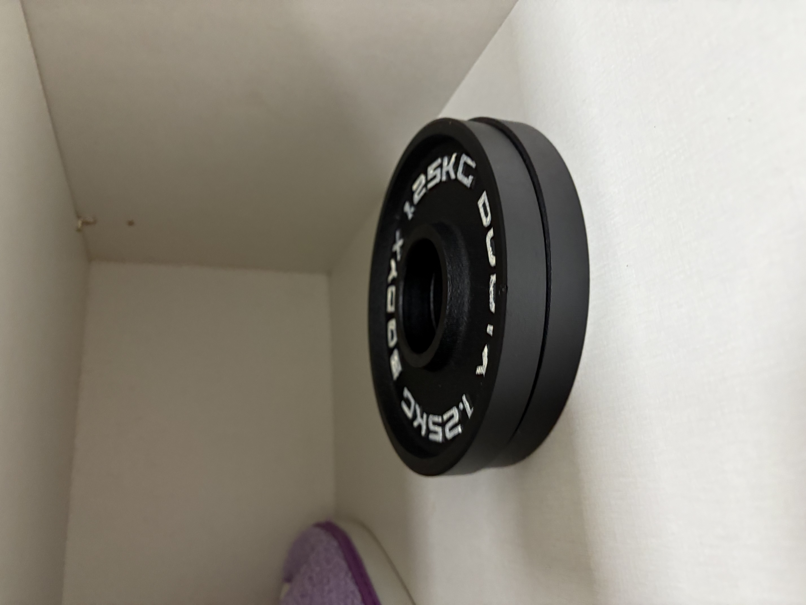

My Resume

Summary
정누리를 소개하기 위한 이력서입니다.
Education
한국방송통신대학교 문화교양학과 학사 졸업
Work experience
2019~2024 (주)전흥 디자이너로 재직 중
2016~2024 오마이뉴스 시민기자
유튜브 누리어리 운영 중
Skils
포토샵 자격증 보유
베가스, 프리미어, 파이널컷, 일러스트레이터 활용 가능
etc.
오마이뉴스 2020 이달의 뉴스게릴라상 수상
Contact Me